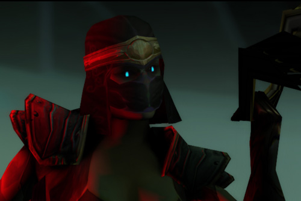

Lady Blaumeaux
"I shall have the first kill. Would anyone care to wager?"
In life, Lady Blaumeaux was remarkable: a political power, a great warrior, a force of Light.
And then, she died in battle against the Scourge, and was reborn. And in rebirth, she was changed.
Her passion became twisted. Her ambition became grasping. And as her flesh rotted with the Plague of the Scourge, so her soul rotted to something sadistic, petty and vengeful.
Her power with dark magic was unequalled amongst the Lich King's servants, but her bitterness and lust for power corrupted even her use in the eyes of the Lich King.
Endlessly relegated, never quite the right hand of the Scourge's power, she withdrew into the shadows, and waited for her chance, time and again, to tear down anyone who stood above her in the Lich King's service...
Lady Blaumeaux is voiced by Joanna Lumley.